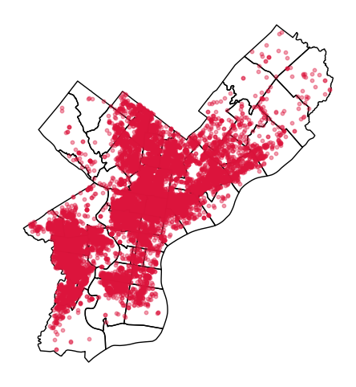
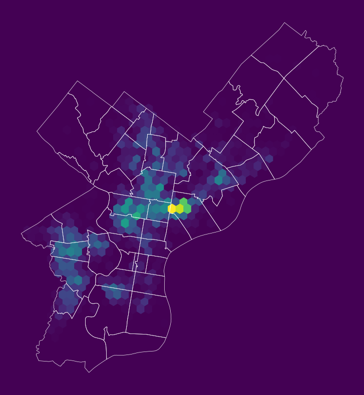
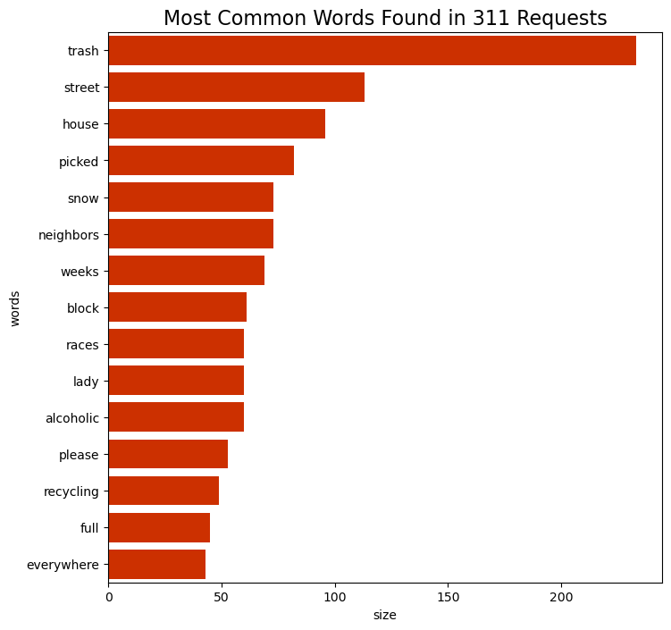

# !pip install holoviews
# !pip install hvplot
# !pip install seabornWeek 10A: Working with web APIs and text data
Learn to request web data, build GeoDataFrames, and explore text from Philadelphia 311 requests.
Lecture guide: API fundamentals → Geospatial API examples → Philadelphia 311 → Text mining
Today’s agenda
- Understand API endpoints and query parameters.
- Request geospatial data from USGS, CARTO, and GeoServices.
- Collect Philadelphia 311 records and summarize their descriptions.
import geopandas as gpd
import holoviews as hv
import hvplot.pandas
import numpy as np
import pandas as pd
import seaborn as sns
from matplotlib import pyplot as plt# Show all columns
pd.options.display.max_columns = 999Part 1: API fundamentals and geospatial data
Or, how to pull data from the web using Python
What is an API?
(noun): A particular set of rules and specifications that software programs can follow to communicate with each other and exchange data.
Examples of public APIs
- Socrata Open Data: https://dev.socrata.com/
- Open Data Philly: https://opendataphilly.org
- US Census Bureau: https://www.census.gov/data/developers/data-sets.html
- Bureau of Labor Statistics: https://www.bls.gov/developers/
- US Geological Survey: https://www.usgs.gov/products/data-and-tools/apis
- US Environmental Protection Agency: https://www.epa.gov/enviro/web-services
- Google APIs: https://console.cloud.google.com/apis/library
- Facebook: https://developers.facebook.com/docs/apis-and-sdks/
- Twitter: https://developer.twitter.com/en/docs/api-reference-index.html (RIP 💀)
- Foursquare: https://developer.foursquare.com/
- Instagram: https://www.instagram.com/developer/
- Yelp: https://www.yelp.com/developers
Note:
When accessing data via API, many services will require you to register an API key to prevent you from overloading the service with requests.
Example 1: Automated data feeds
The simplest form of API is when data providers maintain data files via a URL that are automatically updated with new data over time.
USGS earthquake feeds
This is an API for near-real-time data about earthquakes, and data is provided in GeoJSON format over the web.
The API has a separate endpoint for each version of the data that users might want. No authentication is required.
API documentation:
http://earthquake.usgs.gov/earthquakes/feed/v1.0/geojson.php
Sample API endpoint, for magnitude 4.5+ earthquakes in past day:
http://earthquake.usgs.gov/earthquakes/feed/v1.0/summary/4.5_day.geojson
GeoPandas can read GeoJSON files from the web directly. Simply pass the URL to the gpd.read_file() function:
# Download data on magnitude 2.5+ quakes from the past week
endpoint_url = (
"http://earthquake.usgs.gov/earthquakes/feed/v1.0/summary/2.5_week.geojson"
)
earthquakes = gpd.read_file(endpoint_url)earthquakes.head()| id | mag | place | time | updated | tz | url | detail | felt | cdi | mmi | alert | status | tsunami | sig | net | code | ids | sources | types | nst | dmin | rms | gap | magType | type | title | geometry | |
|---|---|---|---|---|---|---|---|---|---|---|---|---|---|---|---|---|---|---|---|---|---|---|---|---|---|---|---|---|
| 0 | us6000u45f | 4.8 | 39 km NE of Shikotan, Russia | 1792689686780 | 1792690700040 | None | https://earthquake.usgs.gov/earthquakes/eventp... | https://earthquake.usgs.gov/earthquakes/feed/v... | NaN | NaN | NaN | None | reviewed | 0 | 354 | us | 6000u45f | ,us6000u45f, | ,us, | ,origin,phase-data, | 88 | 3.236 | 0.73 | 165 | mb | earthquake | M 4.8 - 39 km NE of Shikotan, Russia | POINT Z (147.0825 44.035 76.309) |
| 1 | us6000u459 | 4.8 | 144 km SSW of ‘Ohonua, Tonga | 1792687881365 | 1792689794040 | None | https://earthquake.usgs.gov/earthquakes/eventp... | https://earthquake.usgs.gov/earthquakes/feed/v... | NaN | NaN | NaN | None | reviewed | 0 | 354 | us | 6000u459 | ,us6000u459, | ,us, | ,origin,phase-data, | 19 | 7.019 | 1.04 | 123 | mb | earthquake | M 4.8 - 144 km SSW of ‘Ohonua, Tonga | POINT Z (-175.4438 -22.564 35) |
| 2 | us6000u44w | 4.9 | western Xizang | 1792683937094 | 1792685382040 | None | https://earthquake.usgs.gov/earthquakes/eventp... | https://earthquake.usgs.gov/earthquakes/feed/v... | NaN | NaN | NaN | None | reviewed | 0 | 369 | us | 6000u44w | ,us6000u44w, | ,us, | ,origin,phase-data, | 49 | 10.797 | 0.92 | 86 | mb | earthquake | M 4.9 - western Xizang | POINT Z (86.2316 33.7966 10) |
| 3 | aka2026uyfanq | 2.6 | 86 km SSE of Igiugig, Alaska | 1792682397039 | 1792682506850 | None | https://earthquake.usgs.gov/earthquakes/eventp... | https://earthquake.usgs.gov/earthquakes/feed/v... | NaN | NaN | NaN | None | automatic | 0 | 104 | ak | a2026uyfanq | ,aka2026uyfanq, | ,ak, | ,origin,phase-data, | 35 | 0.100 | 0.50 | 68 | ml | earthquake | M 2.6 - 86 km SSE of Igiugig, Alaska | POINT Z (-155.169 58.648 136.4) |
| 4 | us6000u44n | 5.2 | 201 km ENE of Nagqu, China | 1792681924462 | 1792683656040 | None | https://earthquake.usgs.gov/earthquakes/eventp... | https://earthquake.usgs.gov/earthquakes/feed/v... | NaN | NaN | NaN | None | reviewed | 0 | 416 | us | 6000u44n | ,us6000u44n, | ,us, | ,origin,phase-data, | 70 | 8.863 | 0.71 | 62 | mb | earthquake | M 5.2 - 201 km ENE of Nagqu, China | POINT Z (93.8669 32.4401 10) |
Let’s explore the data interactively with Folium:
# !pip install folium matplotlib mapclassify
# !pip install foliumfrom mapclassify import classifyearthquakes.explore()
# earthquakes.plot()Make this Notebook Trusted to load map: File -> Trust Notebook
Lots of other automated feeds available, updated every minute:


Example 2: The CARTO API
- Philadelphia hosts the majority of its open data on OpenDataPhilly in the cloud using CARTO
- They provide an API to download the data
- You can access the API documentation on the dataset page on OpenDataPhilly
For example: shooting victims in Philadelphia
https://www.opendataphilly.org/dataset/shooting-victims
and the API documentation:
https://cityofphiladelphia.github.io/carto-api-explorer/#shootings
Let’s take a look at the download URL for the data in the GeoJSON format:

The anatomy of an API request

- Base URL: shown in blue
- ?: shown in purple; it separates the base URL from the query parameters
- Query parameters: underlined in red; these parameters allow the user to customize the data response
- &: underlined in green; the separator between the query parameters
So, let’s break down the URL into its component parts:
# The API endpoint
carto_api_endpoint = "https://phl.carto.com/api/v2/sql"
# The query parameters
params = {
"q": "SELECT * FROM shootings",
"format": "geojson",
"skipfields": "cartodb_id",
# Note: we won't need the filename parameter, since we're not saving the data to a file
# "filename": "shootings"
}Note:
Note: SQL Queries The
qparameter is a SQL query. It allows you to select a specific subset of data from the larger database.CARTO API documentation: https://carto.com/developers/sql-api/
SQL documentation: https://www.postgresql.org/docs/9.1/sql.html
General Query Syntax
SELECT [field names] FROM [table name] WHERE [query]
Request data with Python
We’ll use Python’s requests library to use a “get” request to query the API endpoint with our desired query. Similar to our web scraping requests!
import requestsLet’s make the get request and pass the query parameters via the params keyword:
response = requests.get(carto_api_endpoint, params=params)
response<Response [200]># Get the returned data in JSON format
# This is a dictionary
features = response.json()
# featurestype(features)dict# What are the keys?
list(features.keys())['type', 'features']features["type"]'FeatureCollection'# Let's look at the first feature
features["features"][0]{'type': 'Feature',
'geometry': {'type': 'Point', 'coordinates': [-75.070974, 40.045313]},
'properties': {'year': '2015',
'dist': '2',
'dc_key': 201502033124,
'code': '400',
'date_': '2015-05-25',
'time': '03:30:00',
'race': 'W',
'sex': 'M',
'latino': '1',
'age': 20,
'wound': 'Leg',
'inside': '0',
'outside': '1',
'fatal': '0',
'officer_involved': 'N',
'offender_injured': 'N',
'offender_deceased': 'N',
'location': '1500 BLOCK Longshore Ave',
'point_x': -75.07097363,
'point_y': 40.04531338,
'gdb_geomattr_data': None,
'objectid': 1}}Use the GeoDataFrame.from_features() function to create a GeoDataFrame.
shootings = gpd.GeoDataFrame.from_features(features, crs="EPSG:4326")Important:
Don’t forget to specify the CRS of the input data when using
GeoDataFrame.from_features().
shootings.head()| geometry | year | dist | dc_key | code | date_ | time | race | sex | latino | age | wound | inside | outside | fatal | officer_involved | offender_injured | offender_deceased | location | point_x | point_y | gdb_geomattr_data | objectid | |
|---|---|---|---|---|---|---|---|---|---|---|---|---|---|---|---|---|---|---|---|---|---|---|---|
| 0 | POINT (-75.07097 40.04531) | 2015 | 2 | 201502033124 | 400 | 2015-05-25 | 03:30:00 | W | M | 1 | 20.0 | Leg | 0 | 1 | 0 | N | N | N | 1500 BLOCK Longshore Ave | -75.070974 | 40.045313 | None | 1 |
| 1 | POINT (-75.09035 40.04016) | 2015 | 2 | 201502034321 | 400 | 2015-05-29 | 17:30:00 | B | M | 0 | 20.0 | Hand | 0 | 1 | 0 | N | N | N | 6100 BLOCK Algon Ave | -75.090348 | 40.040162 | None | 2 |
| 2 | POINT (-75.093 40.0307) | 2015 | 2 | 201502061273 | 3400 | 2015-09-20 | 06:16:00 | B | M | 0 | 34.0 | Leg | 1 | 0 | 0 | N | N | N | 900 BLOCK Pratt St | -75.092997 | 40.030702 | None | 3 |
| 3 | POINT (-75.093 40.0307) | 2015 | 2 | 201502061273 | 3400 | 2015-09-20 | 06:16:00 | B | M | 0 | 23.0 | Multiple | 1 | 0 | 0 | N | N | N | 900 BLOCK Pratt St | -75.092997 | 40.030702 | None | 4 |
| 4 | POINT (-75.093 40.0307) | 2015 | 2 | 201502061273 | 3400 | 2015-09-20 | 06:16:00 | B | M | 0 | 42.0 | Multiple | 1 | 0 | 0 | N | N | N | 900 BLOCK Pratt St | -75.092997 | 40.030702 | None | 5 |
At-home exercise: Map shooting incidents
Step 1: Prepare the data
- Drop rows where the geometry is NaN
- Convert to a better CRS (e.g., 3857)
- Load city limits from Open Data Philly and trim to those only within city limits (some shootings have wrong coordinates, outside Philadelphia!)
# make sure we remove missing geometries
shootings = shootings.dropna(subset=["geometry"])
# convert to a better CRS
shootings = shootings.to_crs(epsg=3857)city_limits = gpd.read_file(
"https://opendata.arcgis.com/datasets/405ec3da942d4e20869d4e1449a2be48_0.geojson"
).to_crs(epsg=3857)# Remove any shootings that are outside the city limits
shootings = gpd.sjoin(shootings, city_limits, predicate="within", how="inner").drop(
columns=["index_right"]
)Step 2: Plot the points
A quick plot with geopandas to show the shootings as points, and overlay Philadelphia ZIP codes.
# From Open Data Philly
zip_codes = gpd.read_file(
"https://opendata.arcgis.com/datasets/b54ec5210cee41c3a884c9086f7af1be_0.geojson"
).to_crs(epsg=3857)fig, ax = plt.subplots(figsize=(6, 6))
# ZIP Codes
zip_codes.to_crs(epsg=3857).plot(ax=ax, facecolor="none", edgecolor="black")
# Shootings
shootings.plot(ax=ax, color="crimson", markersize=10, alpha=0.4)
ax.set_axis_off()
Step 3: Create a hexbin map
# Initialize the axes
fig, ax = plt.subplots(figsize=(10, 10), facecolor=plt.get_cmap("viridis")(0))
# Convert to Web Mercator and plot the hexbins
x = shootings.geometry.x
y = shootings.geometry.y
ax.hexbin(x, y, gridsize=40, mincnt=1, cmap="viridis")
# overlay the city limits
zip_codes.to_crs(epsg=3857).plot(
ax=ax, facecolor="none", linewidth=0.5, edgecolor="white"
)
ax.set_axis_off()
Query pattern 1: Count rows
The SQL COUNT function can be applied to count all rows.
response = requests.get(
carto_api_endpoint, params={"q": "SELECT COUNT(*) FROM shootings"}
)response.json(){'rows': [{'count': 18019}],
'time': 0.005,
'fields': {'count': {'type': 'number', 'pgtype': 'int8'}},
'total_rows': 1}Tip:
It’s always a good idea to check how many rows you might be downloading before requesting all of the data from an API!
Query pattern 2: Limit returned rows
The LIMIT function limits the number of returned rows. It is very useful for taking a quick look at the format of a database.
# Limit the returned data to only 1 row
query = "SELECT * FROM shootings LIMIT 1"
# Make the request
params = {"q": query, "format": "geojson"}
response = requests.get(carto_api_endpoint, params=params)Create the GeoDataFrame:
df = gpd.GeoDataFrame.from_features(response.json(), crs="EPSG:4326")
df| geometry | cartodb_id | year | dist | dc_key | code | date_ | time | race | sex | latino | age | wound | inside | outside | fatal | officer_involved | offender_injured | offender_deceased | location | point_x | point_y | gdb_geomattr_data | objectid | |
|---|---|---|---|---|---|---|---|---|---|---|---|---|---|---|---|---|---|---|---|---|---|---|---|---|
| 0 | POINT (-75.07097 40.04531) | 1 | 2015 | 2 | 201502033124 | 400 | 2015-05-25 | 03:30:00 | W | M | 1 | 20 | Leg | 0 | 1 | 0 | N | N | N | 1500 BLOCK Longshore Ave | -75.070974 | 40.045313 | None | 1 |
Query pattern 3: Filter by column values
Use the WHERE function to select a subset where the logical condition is true.
Filter 1: Nonfatal shootings
Example #1: Select nonfatal shootings only.
The API stores fatal as text, with '0' for nonfatal and '1' for fatal. SQL text values need single quotes: use fatal = '0', not fatal = 0.
If the query is invalid, CARTO returns an error response rather than GeoJSON features. Check the HTTP status and response before passing data to GeoPandas; otherwise the conversion can raise a misleading TypeError: string indices must be integers.
# fatal is a text field, so quote its value inside the SQL query.
query = "SELECT * FROM shootings WHERE fatal = '0'"# Make the request
params = {"q": query, "format": "geojson"}
response = requests.get(carto_api_endpoint, params=params, timeout=60)
# Inspect API errors before trying to construct a GeoDataFrame.
payload = response.json()
if "error" in payload:
raise ValueError(f"CARTO SQL error: {payload['error']}")
response.raise_for_status()
if payload.get("type") != "FeatureCollection" or "features" not in payload:
raise ValueError("Expected a GeoJSON FeatureCollection. Inspect payload.")
# Make the GeoDataFrame from the features list.
nonfatal = gpd.GeoDataFrame.from_features(payload["features"], crs="EPSG:4326")
print("number of nonfatal shootings =", len(nonfatal))number of nonfatal shootings = 14111Filter 2: Shootings in 2023
Example #2: Select shootings in 2023
# Select based on "date_"
query = "SELECT * FROM shootings WHERE date_ >= '1/1/23'"# Make the request
params = {"q": query, "format": "geojson"}
response = requests.get(carto_api_endpoint, params=params)
# Make the GeoDataFrame
shootings_2023 = gpd.GeoDataFrame.from_features(response.json(), crs="EPSG:4326")
# Print
print("number of shootings in 2023 = ", len(shootings_2023))number of shootings in 2023 = 14111At-home exercise: Explore monthly and weekday trends
Step 1: Convert the date column to DateTime objects
Add Month and Day of Week columns
# Condddvert the data column to a datetime object
shootings["date"] = pd.to_datetime(shootings["date_"])# Add new columns: Month and Day of Week
shootings["Month"] = shootings["date"].dt.month
shootings["Day of Week"] = shootings["date"].dt.dayofweek # Monday is 0, Sunday is 6Step 2: Calculate number of shootings by month and day of week
Use the familiar Groupby –> size()
count = shootings.groupby(["Month", "Day of Week"]).size()
count = count.reset_index(name="Count")
count.head()| Month | Day of Week | Count | |
|---|---|---|---|
| 0 | 1 | 0 | 205 |
| 1 | 1 | 1 | 177 |
| 2 | 1 | 2 | 163 |
| 3 | 1 | 3 | 171 |
| 4 | 1 | 4 | 168 |
Step 3: Make a heatmap using hvplot
# Remember 0 is Monday and 6 is Sunday
count.hvplot.heatmap(
x="Day of Week",
y="Month",
C="Count",
cmap="viridis",
width=400,
height=500,
flip_yaxis=True,
)Trends: more shootings on the weekends and in the summer months
Part 2: Request data from the Philadelphia 311 API
In part two, we’ll pull data using the API for the Philly 311 system, available at: https://iframe.publicstuff.com/#?client_id=242
We saw this site previously when we talked about web scraping last week:

Step 1: Identify the endpoint
Let’s take another look at the address where the site is pulling its data from:
https://vc0.publicstuff.com/api/2.0/requests_list?client_id=242&device=iframe&limit=35&page=1
This is just an API request! It’s an example of a non-public, internal API, but we can reverse-engineer it to extract the data we want!
Understand the query parameters
Break it down into it’s component parts:
- Base URL: https://vc0.publicstuff.com/api/2.0/requests_list
- Query parameters: client_id, device, limit, page
It looks likes “client_id” identifies data for the City of Philadelphia, which is definitely a required parameter. Otherwise, the other parameters seem optional, returning the requests on a certain device and viewing page.
Step 2: Request a small sample
Let’s test it out. We’ll grab 2 requests from the first page:
r = requests.get(
"https://vc0.publicstuff.com/api/2.0/requests_list",
params={"client_id": 242, "page": 1, "limit": 2},
)
json = r.json()
json{'response': {'requests': [{'request': {'primary_attachment': {'id': 6150329,
'extension': 'jpg',
'content_type': 'image/jpeg',
'url': 'https://d17aqltn7cihbm.cloudfront.net/uploads/a9a11a5c51452dcd3bbf8228381f6d88',
'versions': {'small': 'https://d17aqltn7cihbm.cloudfront.net/uploads/small_a9a11a5c51452dcd3bbf8228381f6d88',
'medium': 'https://d17aqltn7cihbm.cloudfront.net/uploads/medium_a9a11a5c51452dcd3bbf8228381f6d88',
'large': 'https://d17aqltn7cihbm.cloudfront.net/uploads/large_a9a11a5c51452dcd3bbf8228381f6d88'}},
'id': 18791357,
'image_thumbnail': 'https://d17aqltn7cihbm.cloudfront.net/uploads/small_a9a11a5c51452dcd3bbf8228381f6d88',
'title': 'INACTIVE - Park Conditions (Safety & Maintenance)',
'description': 'Multiple cement blocks completely off as well as loose where kids play ',
'status': 'in progress',
'address': 'Von Colln Field,Philadelphia, PA 19130',
'location': 'Philadelphia, Pennsylvania',
'zipcode': '19130',
'foreign_id': '19985025',
'date_created': 1791838822,
'count_comments': 2,
'count_followers': 0,
'count_supporters': 0,
'lat': 39.963659,
'lon': -75.176254,
'user_follows': 0,
'user_comments': 0,
'user_request': 0,
'rank': '1',
'user': 'heather.hopkins11@gmail.com'}},
{'request': {'primary_attachment': {'id': 6137210,
'extension': 'jpg',
'content_type': 'image/jpeg',
'url': 'https://d17aqltn7cihbm.cloudfront.net/uploads/29347f24a7873afebe243be9917df653',
'versions': {'small': 'https://d17aqltn7cihbm.cloudfront.net/uploads/small_29347f24a7873afebe243be9917df653',
'medium': 'https://d17aqltn7cihbm.cloudfront.net/uploads/medium_29347f24a7873afebe243be9917df653',
'large': 'https://d17aqltn7cihbm.cloudfront.net/uploads/large_29347f24a7873afebe243be9917df653'}},
'id': 18743132,
'image_thumbnail': 'https://d17aqltn7cihbm.cloudfront.net/uploads/small_29347f24a7873afebe243be9917df653',
'title': 'INACTIVE - Abandoned Automobile (Integrating)',
'description': 'This trailer has been abandoned here for weeks. Not hooked up to a vehicle, no license plate, etc. ',
'status': 'submitted',
'address': '3106 Gaul St,Philadelphia, PA 19134',
'location': 'Philadelphia, Pennsylvania',
'zipcode': '19134',
'foreign_id': '19970084',
'date_created': 1790877106,
'count_comments': 0,
'count_followers': 0,
'count_supporters': 0,
'lat': 39.986117,
'lon': -75.107326,
'user_follows': 0,
'user_comments': 0,
'user_request': 0,
'rank': '1',
'user': ''}}],
'count': '2',
'benchmark': 4.180920124053955,
'status': {'type': 'success',
'message': 'Success',
'code': 200,
'code_message': 'Ok'}}}Inspect the response structure
Now we need to understand the structure of the response. First, access the list of requests:
request_list = json["response"]["requests"]
request_list[{'request': {'primary_attachment': {'id': 6150329,
'extension': 'jpg',
'content_type': 'image/jpeg',
'url': 'https://d17aqltn7cihbm.cloudfront.net/uploads/a9a11a5c51452dcd3bbf8228381f6d88',
'versions': {'small': 'https://d17aqltn7cihbm.cloudfront.net/uploads/small_a9a11a5c51452dcd3bbf8228381f6d88',
'medium': 'https://d17aqltn7cihbm.cloudfront.net/uploads/medium_a9a11a5c51452dcd3bbf8228381f6d88',
'large': 'https://d17aqltn7cihbm.cloudfront.net/uploads/large_a9a11a5c51452dcd3bbf8228381f6d88'}},
'id': 18791357,
'image_thumbnail': 'https://d17aqltn7cihbm.cloudfront.net/uploads/small_a9a11a5c51452dcd3bbf8228381f6d88',
'title': 'INACTIVE - Park Conditions (Safety & Maintenance)',
'description': 'Multiple cement blocks completely off as well as loose where kids play ',
'status': 'in progress',
'address': 'Von Colln Field,Philadelphia, PA 19130',
'location': 'Philadelphia, Pennsylvania',
'zipcode': '19130',
'foreign_id': '19985025',
'date_created': 1791838822,
'count_comments': 2,
'count_followers': 0,
'count_supporters': 0,
'lat': 39.963659,
'lon': -75.176254,
'user_follows': 0,
'user_comments': 0,
'user_request': 0,
'rank': '1',
'user': 'heather.hopkins11@gmail.com'}},
{'request': {'primary_attachment': {'id': 6137210,
'extension': 'jpg',
'content_type': 'image/jpeg',
'url': 'https://d17aqltn7cihbm.cloudfront.net/uploads/29347f24a7873afebe243be9917df653',
'versions': {'small': 'https://d17aqltn7cihbm.cloudfront.net/uploads/small_29347f24a7873afebe243be9917df653',
'medium': 'https://d17aqltn7cihbm.cloudfront.net/uploads/medium_29347f24a7873afebe243be9917df653',
'large': 'https://d17aqltn7cihbm.cloudfront.net/uploads/large_29347f24a7873afebe243be9917df653'}},
'id': 18743132,
'image_thumbnail': 'https://d17aqltn7cihbm.cloudfront.net/uploads/small_29347f24a7873afebe243be9917df653',
'title': 'INACTIVE - Abandoned Automobile (Integrating)',
'description': 'This trailer has been abandoned here for weeks. Not hooked up to a vehicle, no license plate, etc. ',
'status': 'submitted',
'address': '3106 Gaul St,Philadelphia, PA 19134',
'location': 'Philadelphia, Pennsylvania',
'zipcode': '19134',
'foreign_id': '19970084',
'date_created': 1790877106,
'count_comments': 0,
'count_followers': 0,
'count_supporters': 0,
'lat': 39.986117,
'lon': -75.107326,
'user_follows': 0,
'user_comments': 0,
'user_request': 0,
'rank': '1',
'user': ''}}]Step 3: Build a DataFrame
We need to extract out the “request” key of each list entry. Let’s do that and create a DataFrame:
data = pd.DataFrame([r["request"] for r in request_list])data.head()| primary_attachment | id | image_thumbnail | title | description | status | address | location | zipcode | foreign_id | date_created | count_comments | count_followers | count_supporters | lat | lon | user_follows | user_comments | user_request | rank | user | |
|---|---|---|---|---|---|---|---|---|---|---|---|---|---|---|---|---|---|---|---|---|---|
| 0 | {'id': 6150329, 'extension': 'jpg', 'content_t... | 18791357 | https://d17aqltn7cihbm.cloudfront.net/uploads/... | INACTIVE - Park Conditions (Safety & Maintenance) | Multiple cement blocks completely off as well ... | in progress | Von Colln Field,Philadelphia, PA 19130 | Philadelphia, Pennsylvania | 19130 | 19985025 | 1791838822 | 2 | 0 | 0 | 39.963659 | -75.176254 | 0 | 0 | 0 | 1 | heather.hopkins11@gmail.com |
| 1 | {'id': 6137210, 'extension': 'jpg', 'content_t... | 18743132 | https://d17aqltn7cihbm.cloudfront.net/uploads/... | INACTIVE - Abandoned Automobile (Integrating) | This trailer has been abandoned here for weeks... | submitted | 3106 Gaul St,Philadelphia, PA 19134 | Philadelphia, Pennsylvania | 19134 | 19970084 | 1790877106 | 0 | 0 | 0 | 39.986117 | -75.107326 | 0 | 0 | 0 | 1 |
Step 4: Collect multiple pages
Success! But we want to build up a larger dataset…let’s pull data for the first 3 pages of data. This will take a minute or two…
# Store the data we request
data = []
# Total number of pages
total_pages = 3
# Loop over each page
for page_num in range(1, total_pages + 1):
# Print out the page number
print(f"Getting data for page #{page_num}...")
# Make the request
r = requests.get(
"https://vc0.publicstuff.com/api/2.0/requests_list",
params={
"client_id": 242, # Unique identifier for Philadelphia
"page": page_num, # What page of data to pull
"limit": 200, # How many rows per page
},
)
# Get the json
d = r.json()
# Add the new data to our list and save
data = data + [r["request"] for r in d["response"]["requests"]]
# Create a dataframe
data = pd.DataFrame(data)Getting data for page #1...
Getting data for page #2...
Getting data for page #3...len(data)600data.head()| primary_attachment | id | image_thumbnail | title | description | status | address | location | zipcode | foreign_id | date_created | count_comments | count_followers | count_supporters | lat | lon | user_follows | user_comments | user_request | rank | user | |
|---|---|---|---|---|---|---|---|---|---|---|---|---|---|---|---|---|---|---|---|---|---|
| 0 | {'id': 6150329, 'extension': 'jpg', 'content_t... | 18791357 | https://d17aqltn7cihbm.cloudfront.net/uploads/... | INACTIVE - Park Conditions (Safety & Maintenance) | Multiple cement blocks completely off as well ... | in progress | Von Colln Field,Philadelphia, PA 19130 | Philadelphia, Pennsylvania | 19130 | 19985025 | 1791838822 | 2 | 0 | 0 | 39.963659 | -75.176254 | 0 | 0 | 0 | 1 | heather.hopkins11@gmail.com |
| 1 | {'id': 6137210, 'extension': 'jpg', 'content_t... | 18743132 | https://d17aqltn7cihbm.cloudfront.net/uploads/... | INACTIVE - Abandoned Automobile (Integrating) | This trailer has been abandoned here for weeks... | submitted | 3106 Gaul St,Philadelphia, PA 19134 | Philadelphia, Pennsylvania | 19134 | 19970084 | 1790877106 | 0 | 0 | 0 | 39.986117 | -75.107326 | 0 | 0 | 0 | 1 | |
| 2 | NaN | 18739859 | Maintenance Complaint | This is an overgrown corner unit. The overgro... | in progress | 100 E Sharpnack St, Philadelphia, PA 19119, USA | None | 19968303 | 1790798057 | 3 | 0 | 0 | 40.050803 | -75.182133 | 0 | 0 | 0 | 1 | GROWNSTUFF | ||
| 3 | {'id': 6106060, 'extension': 'jpg', 'content_t... | 18650072 | https://d17aqltn7cihbm.cloudfront.net/uploads/... | INACTIVE - Park Conditions (Safety & Maintenance) | Large dead tree over baseball field | submitted | Wissahickon Valley Park,Philadelphia, PA 19128 | Philadelphia, Pennsylvania | 19128 | 19926277 | 1788637056 | 0 | 0 | 0 | 40.022675 | -75.202864 | 0 | 0 | 0 | 1 | OErsss |
| 4 | NaN | 18649333 | INACTIVE - Park Conditions (Safety & Maintenance) | Dead dog in road | completed | Fairmount Park,Philadelphia, PA 19131 | Philadelphia, Pennsylvania | 19131 | 19926041 | 1788605932 | 3 | 1 | 1 | 39.996701 | -75.205536 | 0 | 0 | 0 | 1 | seanroberts |
Step 5: Focus on request descriptions
Let’s focus on the “description” column. This is the narrative text that the user inputs when entering a 311 request, and it is an example of semi-structured data. For the rest of today, we’ll focus on how to extract information from semi-structured data.
Part 3: Text mining with 311 descriptions
What is semi-structured data?
Data that contains some elements that cannot be easily consumed by computers
Examples: human-readable text, audio, images, etc
Challenges of analyzing text
- Text mining: analyzing blocks of text to extract the relevant pieces of information
- Natural language processing (NLP): programming computers to process and analyze human languages
- Sentiment analysis: analyzing blocks of text to derive the attitude or emotional state of the person
Note:
Twitter is one of the main API examples of semi-structured data, but since Elon Musk overhauled the API access, it’s become prohibitively expensive to access (RIP 💀)
Prepare the descriptions
To get started, let’s remove any requests where the description is missing:
data = data.dropna(subset=["description"])
data_final = data.loc[data["description"] != ""]# Strip out spaces and convert to a list
descriptions = data_final["description"].str.strip().tolist()
descriptions[:10]['Multiple cement blocks completely off as well as loose where kids play',
'This trailer has been abandoned here for weeks. Not hooked up to a vehicle, no license plate, etc.',
"This is an overgrown corner unit. The overgrowth is so much you cant walk on the payment on sharpnack or magnolia street. Also there is evidence of dumping; with trash protruding off the property and onto the pavement. I have reported this to More Beautiful representatives I've seen in the neighborhood ticketing for recycling discrepancies. Please help I am the connecting neighbor and fear that unwanted critters are moving in including the groundhogs and foxes who already reside in the neighborhood.",
'Large dead tree over baseball field',
'Dead dog in road',
'3/4 baby swings are severely damaged and dangerous.',
'Tree has fallen and blocks residents access to their sidewalks.',
'test mulesoft',
'There is feces on the floor in the men’s bathroom and it has been there for days.',
'Sidewalk is a mess overgrown with trash over it. Yard is also never been cleaned. It seems as if in years']Use case: Calculate word frequencies
An example of text mining
Text-cleaning workflow
Some steps to clean up our text data:
- Break strings into words
- Remove capitalization
- Remove stop words
- Remove punctuation
Step 1: Split strings into words
Use the .split() command to break a string into words by splitting on spaces.
example_string = "This is an Example"
example_string.split()['This', 'is', 'an', 'Example']descriptions_words = [desc.split() for desc in descriptions]descriptions_words[0]['Multiple',
'cement',
'blocks',
'completely',
'off',
'as',
'well',
'as',
'loose',
'where',
'kids',
'play']This is a list of lists, e.g., the first element is a list of words. Let’s flatten this into a list of just words:
descriptions_words_flat = []
for list_of_words in descriptions_words:
for word in list_of_words:
descriptions_words_flat.append(word)descriptions_words_flat[0]'Multiple'len(descriptions_words_flat)12447Step 2: Convert words to lowercase
Use .lower() makes all words lower cased
descriptions_words_lower = [word.lower() for word in descriptions_words_flat]descriptions_words_lower[:10]['multiple',
'cement',
'blocks',
'completely',
'off',
'as',
'well',
'as',
'loose',
'where']len(descriptions_words_lower)12447Step 3: Remove stop words
Common words that do not carry much significance and are often ignored in text analysis.
We can use the nltk package.
The “Natural Language Toolkit” https://www.nltk.org/
Import and download the stop words:
# !pip install nltkimport nltk
nltk.download("stopwords");[nltk_data] Downloading package stopwords to
[nltk_data] /Users/xiaojiang/nltk_data...
[nltk_data] Unzipping corpora/stopwords.zip.Get the list of common stop words:
stop_words = list(set(nltk.corpus.stopwords.words("english")))
stop_words[:10]['hadn',
"you'd",
"we're",
'y',
'mightn',
'other',
'is',
"it'd",
'there',
'too']len(stop_words)198descriptions_no_stop = []
for word in descriptions_words_lower:
if word not in stop_words:
descriptions_no_stop.append(word)descriptions_no_stop = [
word for word in descriptions_words_lower if word not in stop_words
]len(descriptions_no_stop)6996Step 4: Remove punctuation
Get the list of common punctuation:
import stringpunctuation = list(string.punctuation)punctuation[:5]['!', '"', '#', '$', '%']Remove punctuation from words:
descriptions_final = []
# Loop over all words
for word in descriptions_no_stop:
# Remove any punctuation from the words
for p in punctuation:
word = word.replace(p, "")
# Save it if the string is not empty
if word != "":
descriptions_final.append(word)Build a table of cleaned words
Convert to a Dataframe with one column:
words = pd.DataFrame({"words": descriptions_final})words.head()| words | |
|---|---|
| 0 | multiple |
| 1 | cement |
| 2 | blocks |
| 3 | completely |
| 4 | well |
Calculate word frequencies
Use a pandas groupby and sort to put in descending order:
N = (
words.groupby("words", as_index=False)
.size()
.sort_values("size", ascending=False, ignore_index=True)
)The top 15 words by frequency:
top15 = N.head(15)
top15| words | size | |
|---|---|---|
| 0 | trash | 233 |
| 1 | street | 113 |
| 2 | house | 96 |
| 3 | picked | 82 |
| 4 | snow | 73 |
| 5 | neighbors | 73 |
| 6 | weeks | 69 |
| 7 | block | 61 |
| 8 | races | 60 |
| 9 | lady | 60 |
| 10 | alcoholic | 60 |
| 11 | please | 53 |
| 12 | recycling | 49 |
| 13 | full | 45 |
| 14 | everywhere | 43 |
Plot the most frequent words
Use seaborn to plot our DataFrame of word counts…
fig, ax = plt.subplots(figsize=(8, 8))
# Plot horizontal bar graph
sns.barplot(
y="words",
x="size",
data=top15,
ax=ax,
color="#cc3000",
saturation=1.0,
)
ax.set_title("Most Common Words Found in 311 Requests", fontsize=16);
Wrap-up and next steps
You can now request API data, parse JSON, build GeoDataFrames, collect paginated records, and summarize text.
Next lecture: Query Census data and combine demographic records with geographic boundaries.
Takeaway: Philly cares about trash! They don’t call it Filthadelphia for nothing…